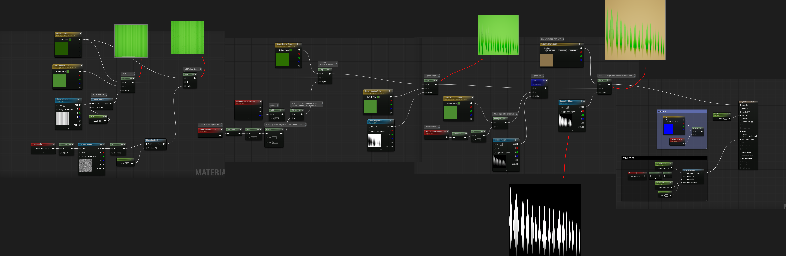
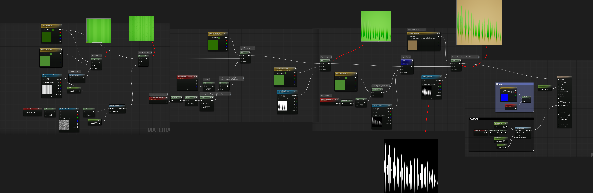
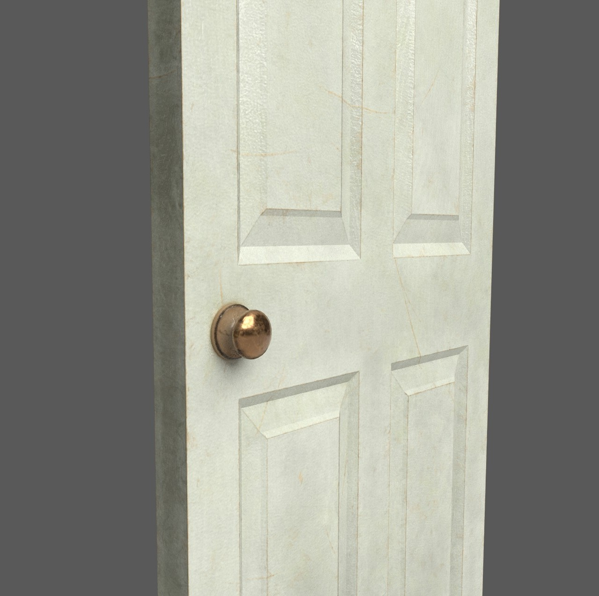
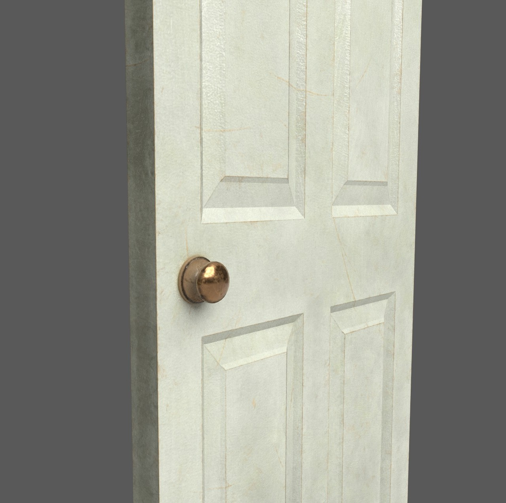

1. It IS Rocket Science!
It IS Rocket Science! is a Unity co-op multiplayer game where players work together to complete mini-games in order to build a rocketship.
Main Menu & Settings UI
I was in charge of the UI design and implementation. I made all of the designs and icons in Figma, and used C# and Unity's UI Toolkit system to make them functional.
Link to Github
3D Modeling - made with Maya & Substance Painter


 


 
